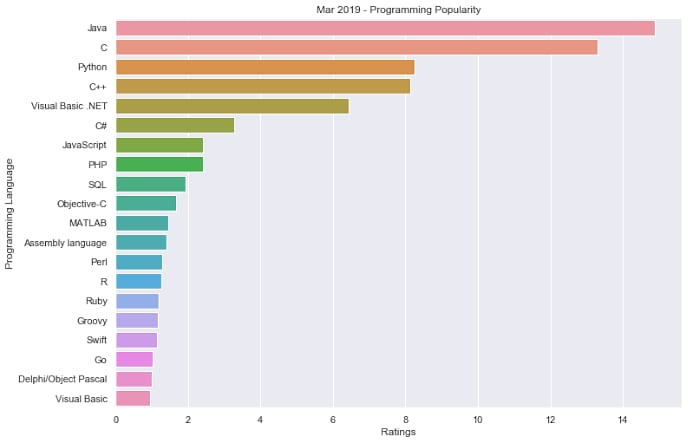

• Introduction
Are you aiming to become a software engineer one day? Do you also want to develop a mobile application that people all over the world would love to use? Are you passionate enough to take the big step to enter the world of programming? Then you are in the right place because through this article you will get a brief introduction to programming. Now before we understand what programming is, you must know what is a computer. A computer is a device that can accept human instruction, processes it and responds to it or a computer is a computational device which is used to process the data under the control of a computer program. Program is a sequence of instruction along with data.
The basic components of a computer are:
Input unit
Central Processing Unit(CPU)
Output unit
The CPU is further divided into three parts
Memory unit
Control unit
Arithmetic Logic unit
Most of us have heard that CPU is called the brain of our computer because it accepts data, provides temporary memory space to it until it is saved on the hard disk, performs logical operations on it and hence processeshere also means converts data into information. We all know that a computer consists of hardware and software. Software is a set of programs that performs multiple tasks together. An operating system is also a software (system software) that helps humans to interact with the computer system.
• The subject
The Definition of Programming Languages:-
A programming language is a notation for writing programs, which are specifications of a computation or algorithm. Some authors restrict the term "programming language" to those languages that can express all possible algorithms. Traits often considered important for what constitutes a programming language include:
Function and targetA computer programming language is a language used to write computer programs, which involves a computer performing some kind of computation or algorithm and possibly control external devices such as printers, disk drives, robots, and so on. For example, PostScript programs are frequently created by another program to control a computer printer or display. More generally, a programming language may describe computation on some, possibly abstract, machine. It is generally accepted that a complete specification for a programming language includes a description, possibly idealized, of a machine or processor for that language. In most practical contexts, a programming language involves a computer; consequently, programming languages are usually defined and studied this way. Programming languages differ from natural languages in that natural languages are only used for interaction between people, while programming languages also allow humans to communicate instructions to machines.AbstractionsProgramming languages usually contain abstractions for defining and manipulating data structures or controlling the flow of execution. The practical necessity that a programming language support adequate abstractions is expressed by the abstraction principle. This principle is sometimes formulated as a recommendation to the programmer to make proper use of such abstractions.Expressive powerThe theory of computation classifies languages by the computations they are capable of expressing. All Turing complete languages can implement the same set of algorithms. ANSI/ISO SQL and Charity are examples of languages that are not Turing complete, yet are often called programming languages.Markup languages like XML, HTML, or troff, which define structured data, are not usually considered programming languages. Programming languages may, however, share the syntax with markup languages if a computational semantics is defined. XSLT, for example, is a Turing complete language entirely using XML syntax . Moreover, LaTeX, which is mostly used for structuring documents, also contains a Turing complete subset.
The term computer language is sometimes used interchangeably with programming language.[However, the usage of both terms varies among authors, including the exact scope of each. One usage describes programming languages as a subset of computer languages. Similarly, languages used in computing that have a different goal than expressing computer programs are generically designated computer languages. For instance, markup languages are sometimes referred to as computer languages to emphasize that they are not meant to be used for programming.
Another usage regards programming languages as theoretical constructs for programming abstract machines, and computer languages as the subset thereof that runs on physical computers, which have finite hardware resources. John C. Reynolds emphasizes that formal specification languages are just as much programming languages as are the languages intended for execution. He also argues that textual and even graphical input formats that affect the behavior of a computer are programming languages, despite the fact they are commonly not Turing-complete, and remarks that ignorance of programming language concepts is the reason for many flaws in input formats.
The usage of Programming Languages:-
Thousands of different programming languages have been created, mainly in the computing field. Individual software projects commonly use five programming languages or more.
Programming languages differ from most other forms of human expression in that they require a greater degree of precision and completeness. When using a natural language to communicate with other people, human authors and speakers can be ambiguous and make small errors, and still expect their intent to be understood. However, figuratively speaking, computers "do exactly whatthey are told to do", and cannot "understand" what code the programmer intended to write. The combination of the language definition, a program, and the program's inputs must fully specify the external behavior that occurs when the program is executed, within the domain of control of that program. On the other hand, ideas about an algorithm can be communicated to humans without the precision required for execution by using pseudocode, which interleaves natural language with code written in a programming language.
A programming language provides a structured mechanism for defining pieces of data, and the operations or transformations that may be carried out automatically on that data. A programmer uses the abstractions present in the language to represent the concepts involved in a computation. These concepts are represented as a collection of the simplest elements available (called primitives).Programming is the process by which programmers combine these primitives to compose new programs, or adapt existing ones to new uses or a changing environment.
Programs for a computer might be executed in a batch process without human interaction, or a user might type commands in an interactive session of an interpreter. In this case the "commands" are simply programs, whose execution is chained together. When a language can run its commands through an interpreter (such as a Unix shell or other command-line interface), without compiling, it is called a scripting language.
The Most Popular Programming Languages:-
What makes the top programming languages so popular? We’ll take a deeper look at five of the top languages to learn how they’re used and why people love them.
1. Java
Java has been the number 1 or 2 most popular language basically since its creation in the mid-90s. Many of the world’s biggest companies use Java to build desktop apps and backend web systems.
If you know Java, chances are you won’t be desperate for work!There are a number of factors that make Java so popular:
Portability: Thanks to the platform-agnostic Java Virtual Machine (JVM), Java can run on nearly every system. Java is also the most popular Android language, so the vast majority of Android apps are built in Java.
Scalability: James Governor has a saying: “When web companies grow up, they become Java shops”.Java is built for scalability in mind, which is why it is so popular among enterprises and scaling startups (Twitter moved from Ruby to Java for scaling purposes). Since Java is a statically-typed language, it’s faster and easier to maintain with less bugs. It is also backwards compatible, which means old versions of the language will still run perfectly even after new versions are released. This is a big relief for businesses who would otherwise worry about rewriting their code every time a new version comes out.
Large community: The popularity of Java helps to ensure its future popularity, thanks to a huge community of users. With massive Stack Overflow and GitHub communities, developers can find help on virtually any problem they might encounter. Coupled with its portability, developers know that investing in Java will pay dividends for a long, long time.
2. The C Programming Language
C is one of the oldest, most popular programming languages, thanks to its near universal portability and early adoption by Tech’s biggest brands, including Microsoft, Apple, Linux, and Oracle.
C is also the most popular language for embedded systems in cars, electronics, and other devices.
Nearly everything that we touch today, from our cell phones to alarm clocks, is influenced by—if not directly written in—the C language.Why is it still a popular programming language to learn today? First, it’s essentially a portable assembly language. It works with nearly every system and operates about as low to the machine as you can get.
C also has features that make is perfectly qualified for operating systems and embedded systems Thanks to its relatively small runtime, C is perfect for keeping these systems lean.
Any programmer will benefit from learning the C language.
Many algorithms written and shared online are done in C. It’s essentially the “universal language” of programming languages. C spinoffs like C++ and C# are also among the top 5 most popular languages, again emphasizing the influence C still has today.
3. Python
The popularity of Python has risen steadily over the past 15 years, finally breaking the top 5 on the Tiobe Index a few years ago. This is because Python is a major language in some of the most exciting technologies today.
Machine learning, artificial intelligence (AI), Big Data, and Robotics all rely heavily on Python (Robotics also relies on C for its use in systems programming). Cyber Security, one of the top software challenges of our time, is also driven by Python..
It’s now the most popular introductory language taught in universities and often picked up by experienced developers as a second or third language.
4. JavaScripts
JavaScript has become one of the most popular programming languages in the world, and number 1 on GitHub in terms of pull requests.
There are notable complaints with JavaScript but JavaScript has held its own against newer languages and will continue to play a significant role on the web. JavaScript allows developers to add interactive effects to web pages. It often works alongside HTML, but it’s becoming more common for web apps to bebuilt entirely in JavaScript. Because of its simplicity and speed, more startups and tech businesses are starting to use JavaScript on the backend via the Node.js framework.
5. Ruby
Ruby is one of the most popular languages among tech startups. Many Silicon Valley unicorns have been built on Ruby, including Airbnb, Twitch, GitHub, and Twitter. Its popularity is bolstered on Ruby on Rails, a full-stack web application framework that runs Ruby.
Ruby is beloved by developers for a number of reasons.
First, Ruby has an incredibly simple beautiful syntax that allows a developer to do more with less code.
Second, thanks to Ruby on Rails, getting a web application up-and-running takes less time than in other frameworks.
The downside of Ruby is its scalability.
Ruby is a dynamically-typed language, which makes it very flexible and great for prototypes, but difficult to maintain at scale. As a Ruby app grows, the dynamic nature of the language obscures the source of code errors and eats up computing resources. This is why Twitter switched from Ruby to Java.
